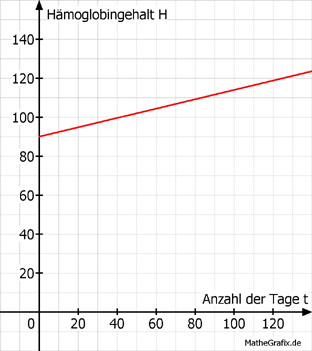

Lineare Funktionen Aufgabe 89 Im Blut eines Menschen sind rote Blutkörperchen. Sie bestehen zu 90% aus Hämoglobin. Der Hämoglobingehalt H im Blut einer Frau ist auf 90 g/Liter gesunken. Durch eine Behandlung steigt der Hämoglobingehalt bei der Frau täglich um 0,24 g/Liter. a) Wie lautet die Funktionsgleichung für H in Abhängigkeit von der Zeit t? b) Nach wie viel Tagen liegt der Hämoglobingehalt bei 120 g/Liter? a) H = 0,24 * t + 90  b) 120 = 0,24 * t + 90 |-90 30 = 0,24 * t |:0,24 t = 125 Tage